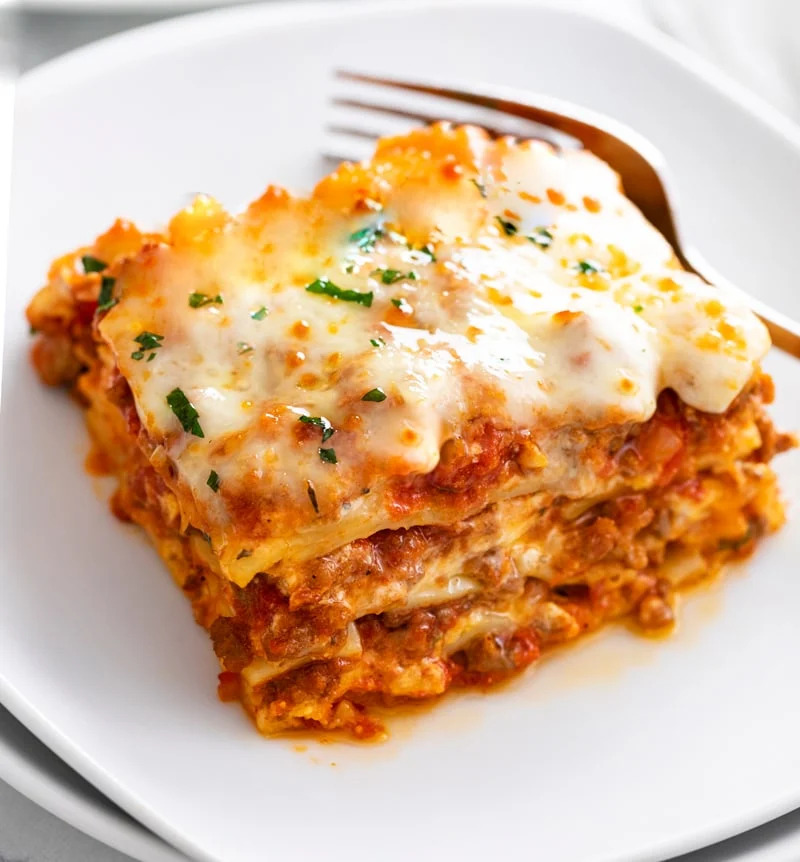

Lasagna

Description
This homemade lasagna is an Italian classic turned American favorite that's sure
to be an instant addition
to your recipe book. With a made-from-scratch meat sauce
that's spruced up with McCormick® Herbs
& Spices, our hearty lasagna recipe is packed
full of rich, robust flavor. As with most lasagna dishes,
this one includes a trio of
cheeses — ricotta, mozzarella and Parmesan — for gooey goodness that'll
have you coming
back for more. Plus, no-boil noodles allow for easier preparation that's ideal for busy
weeknights
or when cooking a feast. To make it a complete meal, serve this meat lasagna with
crusty Garlic Bread and a simple side
salad of mixed greens, tomatoes and cucumbers. Browse
through our collection of pasta recipes for more Italian favorites
like spicy spaghetti or easy
one-pan meals like Easy Pasta Skillet.
Ingredients
-
Meat Sauce
- 1 pound lean ground beef
- 2 tablespoons olive oil
- 1 medium yellow onion, chopped
- 2 teaspoons McCormick® Parsley Flakes
- 2 teaspoons McCormick® Basil Leaves
- 2 teaspoons McCormick® Oregano Leaves
- 1 teaspoons McCormick® Garlic Powder
- 1 1/2 teaspoons sugar
- 1 teaspoon salt
- 1/2 teaspoon McCormick® Crushed Red Pepper
- 2 cans (28 ounces each) crushed tomatoes
- 1 can (14 1/2 ounces) petite diced tomatoes
- 3 tablespoons tomato paste
- 1/2 cup Parmesan cheese, grated
-
Lasagna
- 1 container (32 ounces) ricotta cheese
- 2 cups shredded mozzarella cheese, divided
- 1/2 cup grated Parmesan cheese, divided
- 2 eggs, lightly beaten
- 2 teaspoons McCormick® Parsley Flakes
- 1 teaspoon McCormick® Basil Leaves
- 1 teaspoon McCormick® Garlic Powder
- 1 teaspoon McCormick® Oregano Leaves
- 1 teaspoon salt
- 1/2 teaspoon McCormick® Coarse Ground Black Pepper
- 1 package (8 ounces) no-boil lasagna noodles
Instructions
-
Preheat oven to 375°F. For the Meat Sauce, brown beef in large skillet.
Remove meat from skillet and drain;
set aside. Heat oil in same skillet on
medium heat. Add onion, parsley, basil leaves, oregano leaves, garlic powder,
sugar, salt and red pepper flakes; cook and stir 5 to 10 minutes until onions
are softened.
-
Return beef to skillet and stir in crushed tomatoes, diced tomatoes and tomato
paste. Bring to boil. Reduce heat
to medium-low; simmer 20 minutes. Remove from
heat. Stir Parmesan cheese into sauce. Set aside.
-
Meanwhile, for the Lasagna, mix ricotta, 1 1/2 cups of the mozzarella,
1/4 cup of the Parmesan cheese, eggs,
parsley, basil leaves, garlic powder,
oregano leaves, salt and pepper in a large bowl.
-
Spread 1 1/2 cups of the sauce in bottom of 13x9-inch baking dish. Top with 1/4
of the lasagna noodles. Spread
1/3 of the cheese mixture over noodles. Top with
1 1/2 cups of sauce. Repeat layers two more times, ending with
a layer of pasta and
remaining sauce. Spray one side of a large sheet of foil with no stick cooking spray.
Cover
lasagna with foil, sprayed-side down.
-
Bake 35 minutes. Remove foil. Top with remaining 1/2 cup mozzarella and 1/4 cup Parmesan
cheese. Increase
oven temperature to 475°F. Bake 15 minutes longer, or until cheese is
lightly browned. Let stand 15 minutes before serving.
Home